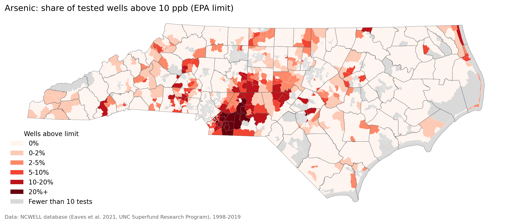
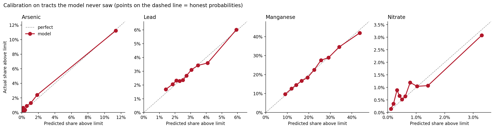
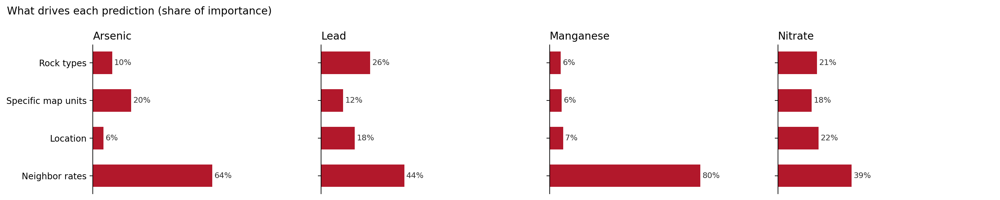

What's likely in your well water?
About 2.4 million North Carolinians drink from private wells, and only new wells have to be tested once. AquaShield estimates your area's risk from 110,000+ state lab tests and the rock beneath you, then tells you what to test for first.
Does your home get water from a private well?
Your address is only used to find your area on the map. It is never stored.
Your area's report
Enter your address above, or click your home on the map.
How it works
1. Real test results
The NC State Laboratory of Public Health tested private wells from 1998 to 2019. UNC researchers geocoded 117,960 of those tests (the NCWELL database). AquaShield uses the census-tract summaries.
2. The rock beneath you
Arsenic follows geology. Tracts on the Carolina Slate Belt's metasedimentary rock have about 12% of wells over the arsenic limit, roughly 5 times the state average.
3. A model that fills the gaps
A gradient-boosted model learns from rock types, location and nearby test results, then estimates every tract in the state, including tracts with few or no tests.
4. Honest confidence
Where many wells were tested, your estimate leans on those tests. Where few were, it leans on the model, and the report tells you so.
How accurate is it?
Tested on census tracts the model never saw. The score is how much of the gap between a statewide guess (0%) and the best possible area-level estimate (100%) each method closes.



Data we checked and excluded
While auditing the public data, we found three columns where the lab's reporting limit is above the state standard (silver, cadmium and chromium), which makes almost every test look contaminated. We excluded them. The tract file's manganese health-limit column also duplicates the 50 ppb column, so AquaShield uses the 50 ppb NC standard.